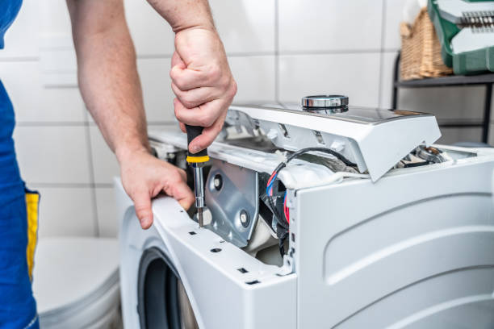

Spin issues
Washer not spinning?We find the cause and fix it fast.
If your clothes come out soaked, the drum stops before spin, or the washer hums without turning, we test the drive system and repair the real issue.
Accurate testing
Motor, belt, lock, and control checks.
Balance review
Suspension and load issues checked clearly.
Clean repair
Clear estimate before work starts.
What we check
The main reasons a washer stops spinning
Spin problems often come from a failed lock, drive issue, or balance problem. We test the machine first, then recommend the most direct fix.

Lid lock and door switch
If the safety lock fails, the washer may stop before spin.
Motor, belt, and coupler
We inspect the parts that actually drive the drum.
Suspension and load balance
Off-balance loads and worn suspension can stop the spin cycle.
Drive signal and control
We confirm whether the control is sending the correct spin command.
Helpful note
Tell us if the washer drains normally, makes a humming noise, or stops with wet clothes inside. That helps us narrow the likely cause quickly.
Our process
A clean workflow for reliable washer repair
We do not guess and we do not swap random parts. We diagnose the failure, explain the fix, and verify performance before we leave.
1. Inspect
We check locks, drive parts, and control response.
2. Confirm
We narrow the exact failure and show you the next step.
3. Repair
We complete the repair with tidy, careful workmanship.
4. Verify
We run the washer and confirm the spin cycle performs correctly.
What you get
Clear estimate, targeted repair, and a verified spin cycle.
Common causes
What usually causes a spin failure
Failed lid lock
The washer may fill and agitate but never move into spin.
Worn belt or coupler
Drive parts wear down over time and stop transferring power.
Weak motor or capacitor
The drum may struggle, hum, or fail to reach full speed.
Off-balance suspension
The control may stop spin to protect the washer from damage.
Control board issue
If the board does not send the spin signal, the cycle will stall.
Drain problem first
Some washers will not spin at all if water has not drained fully.
FAQ
Quick answers about spin repair
Yes. A strong balance issue can stop the spin cycle, but worn suspension or a lock problem can look similar. We test the machine to confirm the real cause.
Not always. A washer can drain normally and still fail to spin because of the lid lock, belt, capacitor, or control board.
It is better to stop and have it checked. Repeating failed spin cycles can strain the drive system and leave extra water trapped in the drum.
Let us know whether the washer drains, whether it hums or clicks, and if the tub tries to move at all. That gives us a faster starting point.